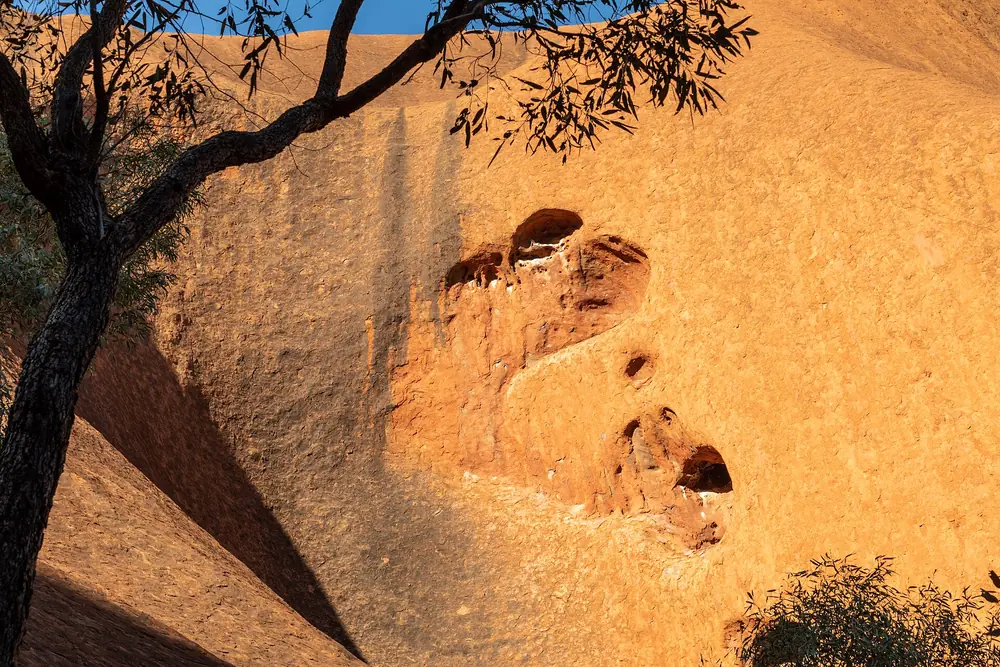

The Red Centre
Northern TerritoryUluru, Kata Tjuta and Watarrka sit on a plain that runs flat for six hundred kilometres in every direction. Anangu have held this country continuously; the climb closed in 2019 at their request, and the base walk was always the better one anyway.
- Base walk
- 10.6 km
- From Alice
- 450 km
- Best
- May–Sep